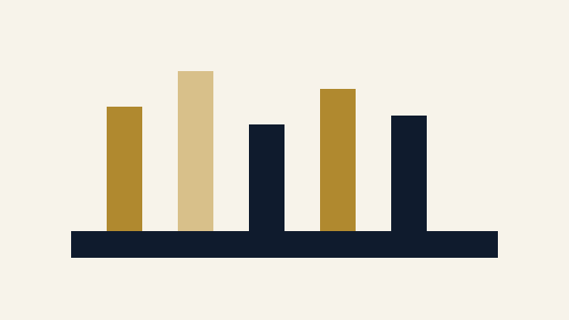

Methods
Classic techniques, when they shine, and how to run them without drama.
Pomodoro
- 25 minutes focused + 5 minutes break; repeat ×4, longer break.
- Use for reading or problem sets that feel heavy to start.
- Pair with phone in another room.

Active Recall
- Close notes; state the idea in your own words.
- Use question cards; mark “confident” vs “hesitant.”
- Short daily sessions beat long weekly ones.
Spaced Repetition
- Review after 1 day, 3 days, 1 week, 1 month.
- Best for facts, vocab, formulas, small lemmas.
- Keep decks small and tidy.

Worked Examples
- Solve one example per new concept—no skipping steps.
- Write the reason for each step in the margin.
- Then attempt a near-variant without notes.